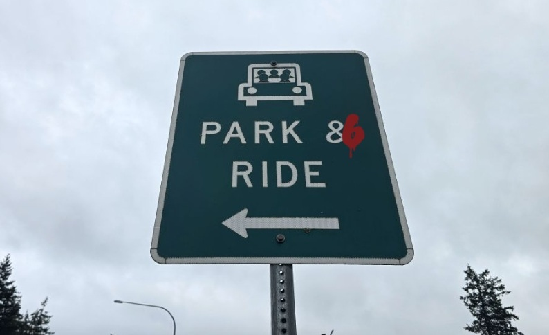

Photography

Video Editing
Music Writing and Recording
Fiction Writing
| PARK & RIDE | ||
|---|---|---|
|
 |
||
|
They put me to sleep, and on the 32nd day, I was awake again, and in ways I had never thought possible. Imagine finding a freeway lane that no one else can see. One that is clear to the horizon with backed-up traffic on either side. This was my prize for a life, so far lived, outside the bounds of exception. I will never leave this place. I knew that much coming in, and that is okay. At the end of the freeway lane is the Park & Ride. That is where I am now. Someone, probably long since dead, has scrawled a six over the trailing edge of the ampersand in red spray paint. 86. The year I was born. My current age. It’s what the kitchen calls out when they have run out of something. It is also what they call it when you are cut off. The beginning. The end. “How are you feeling?” Doctor Logan asks sometime after I have come back around. He doesn’t know about the Park & Ride, and I’m not going to tell him. It’s my secret. That’s why I picked it. “My sinus hurts,” I say, touching the soft flesh below the corner of my left eye. Doctor Logan leans in and squints at my face. “Probably just some mild inflammation. They removed the subdural drain tube a few days ago. It won’t be long, and that will clear up.” I sniff. “I can’t smell anything, Doc.” He frowns and sniffs as well. “I suppose hospitals don’t smell like much,” he says. Inside a stainless steel drawer, he finds something and brings it out. He unwraps the sterile white paper, and I hear a crunch. He holds it out. “Try this.” My nose reflexively wrinkles, and I push away into my pillow. “It smells like the back of an aquarium I visited on a field trip when I was a kid.” “Not bad,” he says, dropping the vial in the garbage. “That was iodine.” “Iodine,” I repeat. There is litter in the Park & Ride. My shoes crunch over broken glass, and I look around. The place is empty. Along the edges, street lamps push back the darkness. The sun has already set. I haven’t noticed until now. Where is the car I came in? Or had I run here? I look back the way I had come, and the traffic is still there, headlights pointing toward me, making me feel like a drive-in movie screen. What if I walk back? But I can’t do that—there is a sign at the entrance of the Park & Ride saying “One Way Only.” I can’t break the laws of instinct. I turn and check the other direction, but the lights are not working there, and I can’t see down the way forward. So I wait. A few hours later, the doctor arrives with a paper cup and holds it out to me. “Try this,” he says. I take the cup, smell the contents, and put it to my lips. It is cool and refreshing, but tasteless. Little chips of ice follow the water into my mouth, and I grind them between my teeth. The texture of the breaking ice is pleasing. I take another drink. “We’ll see how you hold that down and go from there,” he says and is gone again before I know it. Engines idle contentedly back along the length of the road that brought me here. There is a newspaper tucked at the bottom of one of the light poles, and I stoop and pick it up. The front page is a collage of pictures with the headline: ‘Timeline, A World in Review.’ The byline states it was written by Yours Truly, and I’ve got a feeling it’s the same guy who put that 6 up on the sign. There is a picture of the fall of the Berlin Wall. One of United Airlines Flight 175 hitting the south tower of the World Trade Center. Side by side are images of a climate protest and the empty city streets of a mid-pandemic lockdown. The image of a CCTV camera could be a stock photo; anyone could have taken it. A final image is too hard to make out. It is the important one. But the paper is soaked here, and the image, I’m certain, was always as obscure as the way forward. “You probably won’t enjoy this much,” Doctor Logan says. He is holding a pink plastic bowl with a plastic spoon. “Thickened water, I’m afraid, but it is the next step.” I take a bite. It tastes like nothing. It isn’t warm or cold. He watches me patiently while I swallow. It goes down easily, and as soon as it hits my stomach, it grumbles. I’m hungry. I scoop the rest of the flavorless gel into my mouth. “Perfect,” he says, and leaves me alone again. There is a disposable lighter on the cracked blacktop. I pick it up. It is rusty, but when I run my thumb over the striker, it sprays sparks. I crumple the newspaper, and on top of that, I stack naked branches and pieces of broken pallet. It is a good fire that warms my hands and burns far better than it should. I sit uncomfortably. There is something in my back pocket. I lean to the side and pull out a pocket-sized composition book. It is familiar, but I am only now seeing it for the first time. I open it. On the inside cover is my name. There are pencil sketches of familiar faces. I stop on a page, and there is my first kiss. I can smell the dark, musty curtains of the backstage. And hear the choir practicing on the other side of the wall. A tongue that tastes of coffee. I will always remember. Another page highlights every time I was pulled over, including once for speeding while holding an awful chili cheese corndog in one hand. I can’t remember the taste, only that it wasn’t good. Most of the rest of the book is filled with my children. This part is a rollercoaster ride comprised of tears—both sorrow and joy. I am crying. I taste salty tears on my tongue and awaken. “Well,” Doctor Logan says, smiling his broad, perfect smile. “The tests are all good. You’re clear to eat solid food.” I salivate. I am starving. Not only physically, but also in ways I cannot explain. Doctor Logan opens the door, reaches into the hallway, and wheels a cart in. Ten billion people live on the planet, and it is I, not them, who is living my dream. I try to be grateful. We are at the end. The final street lamps at the exit of the Park & Ride buzz to life, dully glowing amethyst light. They are wearing out, I think. One day, the way forward will be closed, and those that come will have no place to go. Someone should change the bulbs. I am sure this is the job of Yours Truly, but he has gone on to other things. A black sedan is parked beneath the violet lights, its license plate simply states: 86. This is my ride. I know it. I bring the composition book. It only matters to me. The door opens by itself, and I slide in. The interior is beige—comforting. There is the slightest scent of artificial banana. The driver looks at me through the rearview mirror, and the door closes. “Here you go, just what you asked for,” Doctor Logan says, smiling his endless smile. “And just what the doctor ordered.” I take a bite. It has been decades since I have tasted anything, and I have to stop mid-bite to collect myself. The transplant worked, and the dull ache in my sinus is nothing but a distant distraction. I had forgotten all the flavors. What remained had been muted by time. Now they all come rushing back to me in a wave of nostalgic memories. I eat my last meal, and Doctor Logan’s voice fades forever into that of the driver’s. “Where to?” the driver asks. But we both know where I am going. “Exit 86,” I say, and we share a laugh. “And take the express.” He flicks me a single finger salute before putting the car in gear. We wheel out of the Park & Ride. Memories flow in a constant wave of deja vu that I can’t escape–I don’t want to escape. They radiate from the composition book that slowly closes in my tired hand as the soft hum of the sedan’s wheels turning over the blacktop lulls me fully, eternally to sleep. | ||